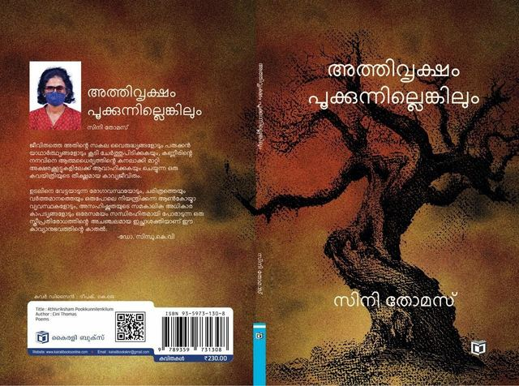

2026 · 11 പരിപാടികൾ

പുസ്തക പ്രകാശനം · നടുപ്പറമ്പിൽ മിനി ഓഡിറ്റോറിയം, കൊട്ടയാട് 04/10/2026

പുരസ്കാരം · ആലക്കോട് ടൗൺ 05/09/2026

സർഗ സായാഹ്നം · സർഗവേദി ഹാൾ, ആലക്കോട് 12/08/2026

ദേശാഭിമാനി 02/08/2026

പുസ്തക ചർച്ച · സർഗവേദി ഹാൾ, ആലക്കോട് 25/07/2026

പുസ്തക ചർച്ച · സർഗവേദി ഹാൾ, ആലക്കോട് 28/06/2026

അനുസ്മരണം · സർഗവേദി ഹാൾ, ആലക്കോട് 26/06/2026

പുരസ്കാരം · കരയോഗ മന്ദിരം ഹാൾ, ആലക്കോട് 19/06/2026

പ്രക്ഷേപണം 09/06/2026

വീട്ടുമുറ്റ ചർച്ച · എ ആർ ഗീതാകുമാരി, സി കെ രാജൻപിള്ള എന്നിവരുടെ വീട്ടുമുറ്റം 07/03/2026

വീട്ടുമുറ്റ ചർച്ച · എ.ആർ. പ്രദീപിൻ്റെ വീട്ടുമുറ്റം 21/01/2026